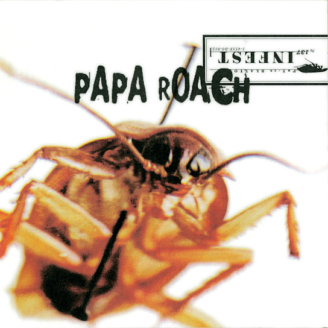
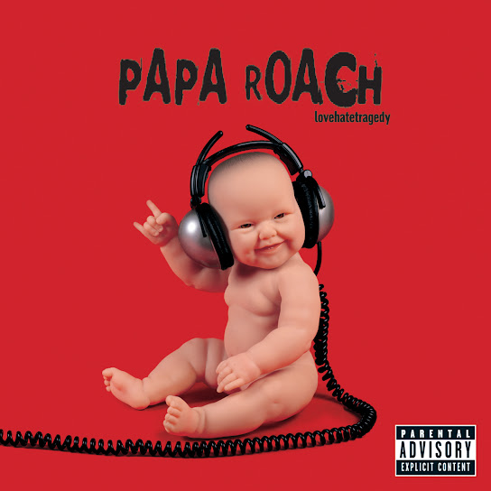
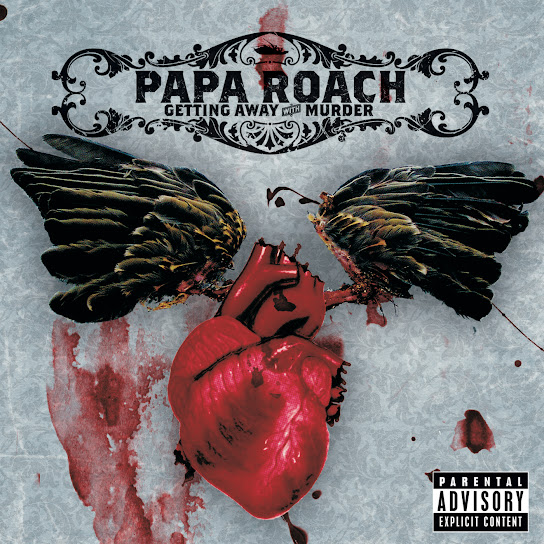

Discografía
Estos son algunos de los álbumes más representativos de esta banda, con enlace directo a YouTube para escuchar el disco completo.
Álbumes Destacados

Infest (2000)
"infest es el album debut de la banda el cual contiene la cancion que los dio a conocer "last resort”.
Escuchar en YouTube

Lovehatetragedy (2002)
Segundo disco de la banda el cual contiene canciones como "She loves me not" que siguen en corazones de sus fanaticos .
Escuchar en YouTube

Getting Away With Murder (2004)
Tercer album de la banda con canciones muy oidas como Getting Away Whit Murder.
Escuchar en YouTube